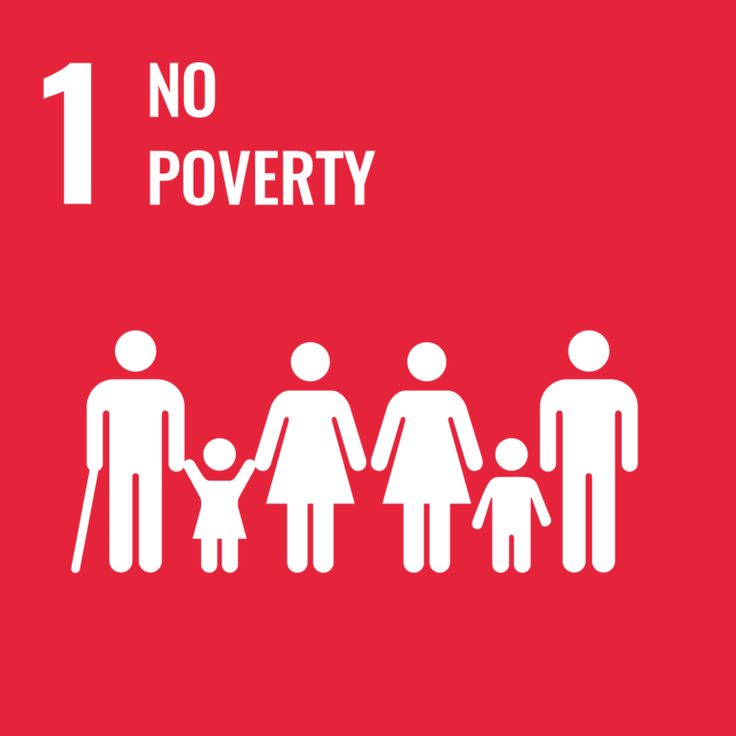
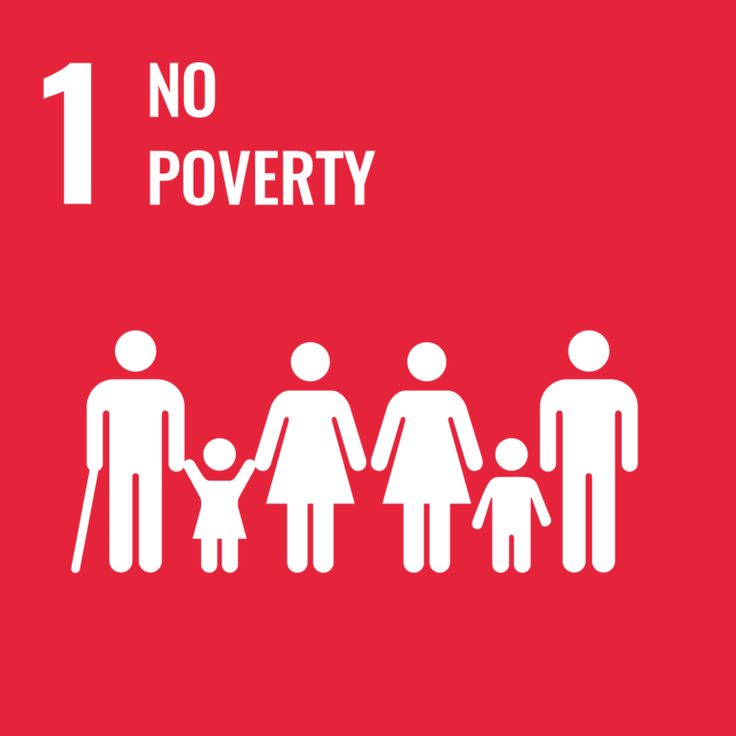

(1280 x 180 px).png)


G20 (Group of Twenty)
Group of Twenty (G20) adalah forum kerja sama multilateral yang sangat penting dalam bidang ekonomi internasional. Kelompok ini terdiri dari 19 negara dan Uni Eropa, di mana Indonesia termasuk salah satu anggotanya, bersama negara-negara besar lain seperti Amerika Serikat, Tiongkok, Jepang, dan Jerman. G20 dibentuk pada tahun 1999 setelah krisis ekonomi Asia dengan tujuan utama untuk memperkuat koordinasi kebijakan ekonomi global.
Indonesia punya posisi yang sangat penting di G20 karena kita adalah satu-satunya anggota dari Asia Tenggara. Kita bahkan pernah menjadi tuan rumah KTT G20 pada tahun 2022 di Bali. Saat itu, fokus utamanya adalah pemulihan ekonomi setelah pandemi, termasuk digitalisasi UMKM, menjaga ketahanan pangan, dan inklusi keuangan (memperluas akses ke layanan keuangan). Lewat forum G20 ini, negara-negara anggota menyepakati langkah bersama untuk menjaga ekonomi dunia tetap stabil dan mempermudah akses dana untuk pembangunan.
 


Kerjasama dalam G20 terutama mendukung SDG 8 (Pekerjaan Layak dan Pertumbuhan Ekonomi) karena mendorong akses keuangan yang lebih mudah dan memberikan dukungan bagi UMKM, yang menjadi salah satu sumber pendapatan utama masyarakat. G20 juga berkaitan dengan SDG 10 (Mengurangi Ketimpangan) karena membantu kelompok rentan agar bisa mendapatkan layanan ekonomi yang lebih adil. Dampaknya terhadap SDG 1 tidak langsung, tetapi dengan meningkatnya pendapatan dan peluang kerja, masyarakat yang berisiko miskin dapat terbantu untuk keluar dari kemiskinan dan meningkatkan kesejahteraan hidup mereka.